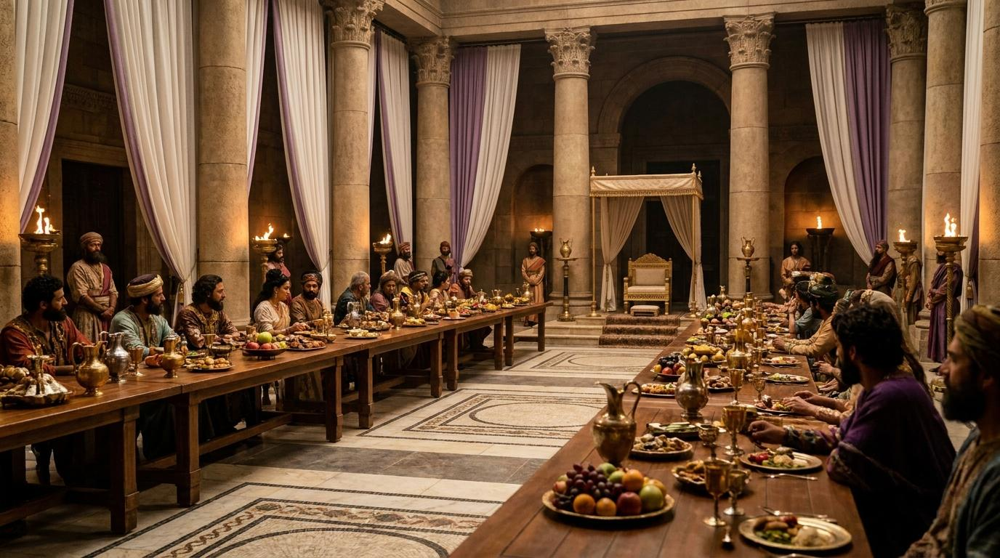
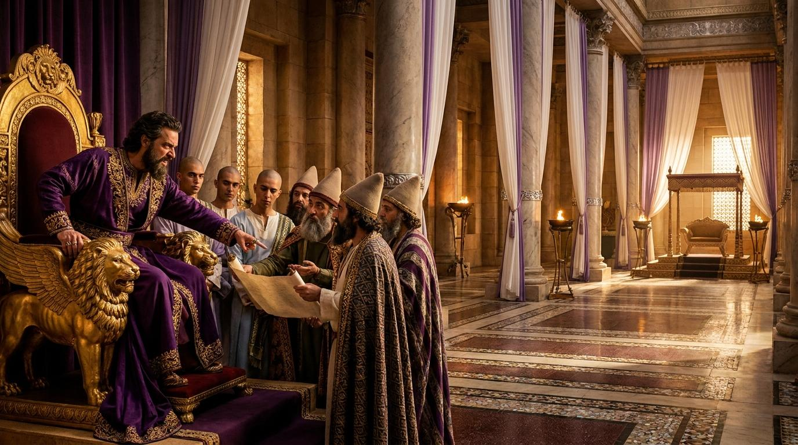

講道文稿：在失控的世界看見神的護理
弟兄姐妹們，當我們環顧今天的世界，是否常感到一種深深的無力感？政治領袖的傲慢、法律的荒謬，似乎都在告訴我們：這個世界失控了。但是，以斯帖記揭示了一個真理：在人看來最失控的時刻，正是神隱藏的護理最精準運作的時刻。
神在幕後，藉著最荒謬的世俗政令，悄悄啟動了拯救全猶太民族的偉大計畫。不要為作惡的心懷不平，世人的傲慢終將敗露，而神隱藏的護理永不落空。


「王后瓦實提卻不肯遵太監所傳的王命而來，所以王甚發怒，心如火燒。」
掌管萬有的主宰，當我們看見世上的權力狂傲自大、社會局勢動盪不安時，求祢開我們的屬靈眼睛，看見祢是那位隱藏在歷史帷幕之後的神。幫助我們在人性的軟弱與血氣中，不失去對祢護理的信心；在荒謬與失控的環境裡，深信祢的旨意必然成就。奉主耶穌基督的名求，阿們。
經文：第七日，亞哈隨魯王飲酒，心中快樂...瓦實提卻不肯遵太監所傳的王命而來。
關鍵字：כֶּתֶר (Keter) - 冠冕。代表王賦予的地位，王視王后為展示權力的戰利品。
問題：瓦實提為何抗旨？
答：拒絕淪為炫耀權力的玩物，保有神所賦予的尊嚴。
例證：現代企業主管將妻子視為應酬的「展示品」，忽略其獨立人格。
名言：提摩太·凱勒：「當偶像被挑戰時，我們的反應總是極度的憤怒或極度的恐懼。」
經文：王問他們說：「王后瓦實提不遵太監所傳的王命，照著律法，待她應當怎樣呢？」
關鍵字：דָּת (Dat) - 律法/詔書。原本應是公正的律法，卻被用來安撫醉酒君王受傷的自尊。
問題：為何擁有絕對權力的王，遇到挫折時卻需要依賴這群「哲士」？
答：極權者活在同溫層中，尋求的是給失控情緒合法性的包裝。
例證：童話《國王的新衣》，謀士只會用華麗辭藻包裝荒謬謊言。
名言：潘霍華：「愚蠢是一種道德上的缺陷...當權力集中時，人類往往會放棄自己獨立思考的能力。」
經文：王就把詔書發往各省，照各省的文字，各族的方言，使作丈夫的在家中作主。
關鍵字：בָּזָה (Bazah) - 藐視/輕看。男性對「被藐視」的深層恐懼。
問題：人的尊重可以用法律來強制規定嗎？神如何使用這場荒謬的鬧劇？
答：尊重無法強制，但神將瓦實提的被廢轉化為以斯帖拯救民族的契機。
例證：家長制定嚴格家規反引發叛逆，亞哈隨魯王亦成為笑柄，神卻藉此成就救恩計畫。
名言：司布真：「神的護理是奇妙的；祂能使用人的憤怒來讚美祂。」
弟兄姐妹們，當我們環顧今天的世界，是否常感到一種深深的無力感？政治領袖的傲慢、法律的荒謬，似乎都在告訴我們：這個世界失控了。但是，以斯帖記揭示了一個真理：在人看來最失控的時刻，正是神隱藏的護理最精準運作的時刻。
神在幕後，藉著最荒謬的世俗政令，悄悄啟動了拯救全猶太民族的偉大計畫。不要為作惡的心懷不平，世人的傲慢終將敗露，而神隱藏的護理永不落空。

⚠️ 網路資料可能出錯，請小心查證、謹慎使用。